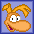
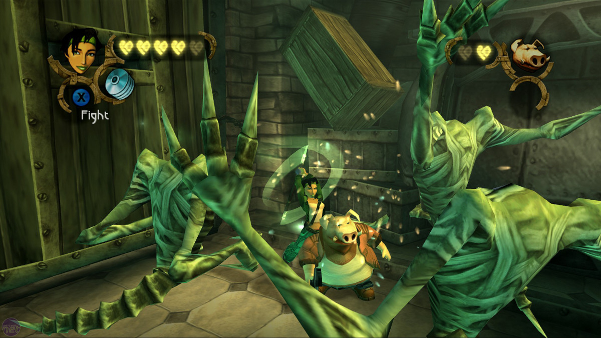
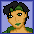

Assassin's Creed 2
À l'attention du responsable du recrutement,
Détenteur d'un diplôme de Designer Numérique du cursus Game Design m'ayant été octroyé par l'ICAN à Paris, je souhaiterais rejoindre Ubisoft et
exercer la fonction de QA Tester. Je pourrais prendre part aux missions de la Confrérie dès le mois de Mai au plus tôt.
Pendant mes études j'ai pu développer un profil polyvalent en accumulant de l'expérience dans divers domaines, notamment le QA Testing avec la
création de rapports de bugs via Excel, le prototypage en C# sur Unity & blueprint sur Unreal, ou encore la rédaction de documents de design.

J'ai eu l'occasion de travailler en équipe sur divers projets tels que des jeux et mods (Glimmer, Arise, mod Slay the Spire…) à plusieurs reprises, ainsi que sur l'élaboration et l'équilibrage de niveaux qui
ont pu être playtestés régulièrement (ChuChu Rocket,
Megaman,
Wargroove…).
Preuve de mon autonomie et envie d'apprendre, je développe mon propre Tactical RPG en solo (réseaux sociaux : Twitter / Bluesky), et vous pourrez d'ailleurs trouver les divers projets sur lesquels j'ai
travaillé sur mon portfolio.
Portant un intérêt à de nombreux genres de jeux, je serais capable de m'adapter à tous types de projets aux côtés de collègues passionnés ayant
accumulés de l'expérience dans le domaine, et je pense que c'est uniquement avec cet état d'esprit que je pourrais améliorer mes capacités et
connaissances de QA Tester polyvalent et faire mes preuves chez Ubisoft.

Rayman 2 The Great Escape

Beyond Good and Evil

Enfin, si vous ne recherchez pas actuellement un QA Tester, je pourrais aussi contribuer en tant que Game Designer/Level Designer si nécessaire.
Je vous remercie d'avoir lu mon message, et me tiens à votre entière disposition pour tous renseignements complémentaires.
Dans l'attente de votre réponse, je vous prie d'agréer mes sincères salutations.
Signé :
- Scotty CHOUAN.